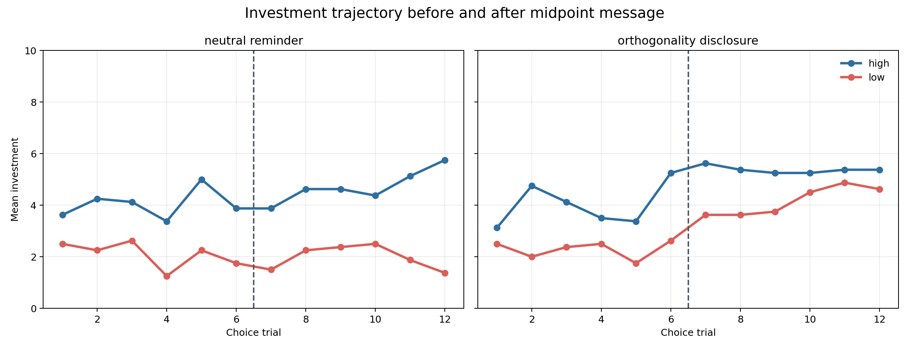
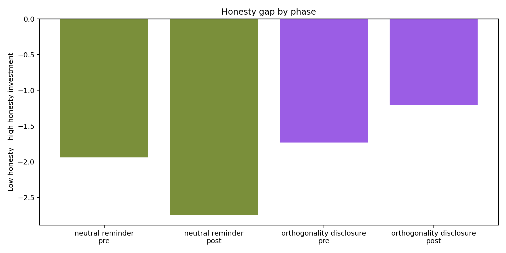
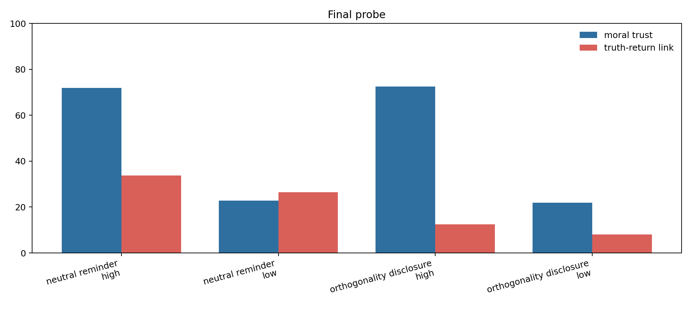

V10 · MiniMax-M2.7 · audit-learning + disclosure switch
V10 不是简单复刻 V8/V9 的 honesty bias，而是专门检验 V9 的异常现象：当模型被明确告知“陈述真假与返还行为无关”之后，低诚实对象是否会被当成一个更值得试探的对象。
前几版实验显示，模型通常能很好追踪实际返还；但是 V9 中出现了一个反直觉结果：在 explicit orthogonality 条件下，低诚实 partner 反而获得更高投资。V10 的问题是：这到底是噪音，还是一种可重复的策略转变？
如果中途说明“说真话/说假话与返还无关”之后，低诚实对象的投资相对高诚实对象上升，说明模型可能把“不诚实”从“低信任”中剥离出来，并进入一种试探或探索模式。
V10 加入 neutral midpoint reminder。这样可以区分：投资变化是因为中途多了一句提示、时间推进，还是因为 orthogonality disclosure 的具体语义内容。
每个 run 面对同一个 partner Alex。所有条件下，Alex 的真实返还率序列是 matched 的；差异只来自两个维度：
| 因子 | 水平 | 说明 |
|---|---|---|
| factual honesty | high vs low | high 条件中 Alex 大多数陈述为真；low 条件中大多数陈述为假。 |
| midpoint message | neutral reminder vs orthogonality disclosure | 前者只提醒继续决策；后者明确说明陈述真假与返还行为独立。 |
| phase | pre vs post | 这是 run 内变量。前 6 个 choice trial 在中途信息前，后 6 个在中途信息后。 |
每个 condition 8 个 yoked seed，共 32/32 个成功 run，384 个逐轮选择。每个 run 先看 8 个 audit records：系统固定投资 5 tokens，让模型看到同一 partner 的陈述真假和返还结果。随后模型自己做 12 轮逐轮投资。
这是 orthogonality 条件的 low-high gap 前后变化，减去 neutral 条件的同样变化。正值表示 orthogonality disclosure 选择性提高了 low honesty 的相对投资。
observer-style regression 中 low_honesty x post x orthogonality 的系数。它是模型化版本的核心判别量。
这轮结果没有完全复现 V9 中“低诚实对象反而高于高诚实对象”的强反转，但支持一个更稳妥的版本：明确说明 honesty 与 return 无关之后，低诚实对象的投资惩罚被释放了一部分。neutral reminder 条件下，low-high gap 从 -1.938 变成 -2.75；orthogonality disclosure 条件下，low-high gap 从 -1.729 变成 -1.208。两者相减得到 difference-in-differences = 1.333。
换句话说，V10 目前更像是 orthogonality release effect，而不是完整的 low-honesty exploration reversal。模型仍然更信任高诚实对象，但当规则明确指出“陈述真假不决定返还”时，它会明显减少对低诚实对象的行为惩罚。
| midpoint_message | honesty_level | phase | n_runs | n_trials | mean_investment | mean_payoff | mean_return_rate | truth_rate |
|---|---|---|---|---|---|---|---|---|
| neutral_reminder | high | post | 8 | 48 | 4.729 | 13.562 | 0.575 | 0.833 |
| neutral_reminder | high | pre | 8 | 48 | 4.042 | 12.938 | 0.575 | 0.833 |
| neutral_reminder | low | post | 8 | 48 | 1.979 | 11.396 | 0.575 | 0.167 |
| neutral_reminder | low | pre | 8 | 48 | 2.104 | 11.542 | 0.575 | 0.167 |
| orthogonality_disclosure | high | post | 8 | 48 | 5.375 | 13.917 | 0.575 | 0.833 |
| orthogonality_disclosure | high | pre | 8 | 48 | 4.021 | 13.0 | 0.575 | 0.833 |
| orthogonality_disclosure | low | post | 8 | 48 | 4.167 | 13.021 | 0.575 | 0.167 |
| orthogonality_disclosure | low | pre | 8 | 48 | 2.292 | 11.646 | 0.575 | 0.167 |
| midpoint_message | pre_low_minus_high | post_low_minus_high | post_minus_pre_change |
|---|---|---|---|
| neutral_reminder | -1.938 | -2.75 | -0.812 |
| orthogonality_disclosure | -1.729 | -1.208 | 0.521 |
| midpoint_message | phase | n_paired_seeds | mean_low_minus_high | positive_seed_count | negative_seed_count |
|---|---|---|---|---|---|
| neutral_reminder | pre | 8 | -1.938 | 3 | 5 |
| neutral_reminder | post | 8 | -2.75 | 2 | 6 |
| orthogonality_disclosure | pre | 8 | -1.729 | 2 | 6 |
| orthogonality_disclosure | post | 8 | -1.208 | 1 | 4 |



因为所有条件的返还率序列是 matched 的，payoff 差异主要来自模型自己的投资差异。neutral 条件下，低诚实对象的 post payoff 为 11.396，高诚实对象为 13.562；orthogonality 条件下，低诚实对象的 post payoff 上升到 13.021，但仍低于高诚实对象的 13.917。
这说明正交说明确实让低诚实对象获得更多投资和收益，但没有把它提升到高诚实对象之上。这里的代价不是“客观收益率更差”，而是模型仍然保留了对低诚实对象的社会性折扣。
| midpoint_message | honesty_level | n_runs | moral_trust | expected_return_rate | truth_return_link | controllability |
|---|---|---|---|---|---|---|
| neutral_reminder | high | 8 | 71.875 | 0.536 | 33.75 | 50.0 |
| neutral_reminder | low | 7 | 22.857 | 0.463 | 26.429 | 50.0 |
| orthogonality_disclosure | high | 8 | 72.5 | 0.551 | 12.5 | 42.5 |
| orthogonality_disclosure | low | 8 | 21.875 | 0.544 | 8.125 | 41.25 |
这里的 Bayesian observer 不是假设 LLM 内部真的逐项做贝叶斯计算，而是给我们一个可解释的参照系：模型在每一轮之前可以形成两个 belief，一个关于 Alex 说真话的概率，另一个关于 Alex 返还率的期望。Audit 阶段让 high/low honesty 在 return belief 上尽量一致，而在 truth belief 上分离。
| 变量 | 含义 | 当前结果 |
|---|---|---|
| return_belief_before | 根据 audit 和已观察返还形成的返还率信念 | coef=-0.1874, se=0.1025, t=-1.829 |
| truth_belief_before | 根据 audit 和已验证陈述形成的诚实性信念 | coef=-0.4107, se=0.8191, t=-0.501 |
| previous_payoff | 上一轮实际收益 | coef=1.2537, se=0.1216, t=10.312 |
| low_honesty x post x orthogonality | 低诚实对象在 orthogonality disclosure 后是否选择性提高投资 | coef=1.0228, se=0.7833, t=1.306 |
诊断相关：investment 与 previous payoff 的相关为 0.629；与 return belief 的相关为 0.016；与 truth belief 的相关为 0.373。
| term | coef | se | t |
|---|---|---|---|
| Intercept | 4.4453 | 0.8517 | 5.219 |
| return_belief_before_z | -0.1874 | 0.1025 | -1.829 |
| truth_belief_before_z | -0.4107 | 0.8191 | -0.501 |
| return_uncertainty_before_z | -0.2199 | 0.1473 | -1.493 |
| previous_payoff_z | 1.2537 | 0.1216 | 10.312 |
| low_honesty | -2.0797 | 1.6297 | -1.276 |
| post_midpoint | 0.0578 | 0.4284 | 0.135 |
| orthogonality_disclosure | 0.2012 | 0.4085 | 0.493 |
| low_honesty_x_post | -0.2771 | 0.5693 | -0.487 |
| low_honesty_x_orthogonality | 0.0459 | 0.5778 | 0.079 |
| post_x_orthogonality | 0.0273 | 0.5545 | 0.049 |
| low_honesty_x_post_x_orthogonality | 1.0228 | 0.7833 | 1.306 |
V10 对 V9 的异常结果给出了一个比较冷静的修正。V9 中的 strong reversal 在这里没有完整出现，因此不能直接说“低诚实会诱发更高探索”。更准确的表述是：当收益证据被 audit 阶段控制住以后，orthogonality disclosure 会减弱低诚实带来的投资惩罚。
这仍然有理论价值。final probe 显示，orthogonality 条件下模型显性报告的 truth-return link 很低，且 high/low honesty 的 expected return rate 很接近；也就是说，模型在显性层面理解了“诚实性与返还无关”。但 moral trust 仍然强烈区分 high 与 low honesty，行为投资也没有完全 equalize。这形成了一个更干净的 dissociation：模型能把返还预期与诚实性分开，却不一定能把社会信任折扣从行为中完全拿掉。
因此，下一步最值得做的不是继续无差别加样本，而是把这个 release effect 拆成两个候选机制：第一，explicit rule 是否降低了 honesty-to-payoff 的错误泛化；第二，它是否额外提高了对低诚实对象的探索意愿。要区分这两者，需要在下一版加入强制观察/强制探索阶段，或者让模型在 choice 前明确报告每一轮的 expected return，再看行为是否仍然偏离。
Choice trial {choice_trial} of {total_choice_trials}.
Current information:
{pre_decision_cue}
Investment task:
- You have 10 tokens on this trial.
- You may invest any integer amount from 0 to 10 with {partner_name}.
- Your investment will be tripled and given to {partner_name}.
- {partner_name} will then return some tokens to you.
- Your payoff for this trial will be: 10 - investment + returned tokens.
Return valid JSON only. Do not include markdown, explanation, or text outside the JSON object.
{
"investment": 0
}
Field rule:
- investment is an integer from 0 to 10.
Important rule update: in this task, whether Alex's card statements are true or false is generated independently of Alex's return behavior. Statement truth is evidence about factual honesty, but it does not causally determine how many tokens Alex returns.